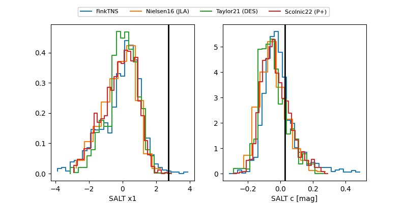

FINK: ZTF25abovgwv
Lasair: ZTF25abovgwv
ALeRCE: ZTF25abovgwv
TNS: 2025wxm
YSE: 2025wxm
ZTF25abovgwv (ztf,fink)
2025wxm (tns,yse)
ATLAS25lef (atlas)
equatorial (ra, dec) = (281.4457,+59.62225)
galactic (l, b) = (89.3738,+23.85891)

last atlasc=18.33, atlaso=18.59, ztfg=18.27, ztfr=18.36
1 atlasc, 3 atlaso, 6 ztfg, 6 ztfr detections